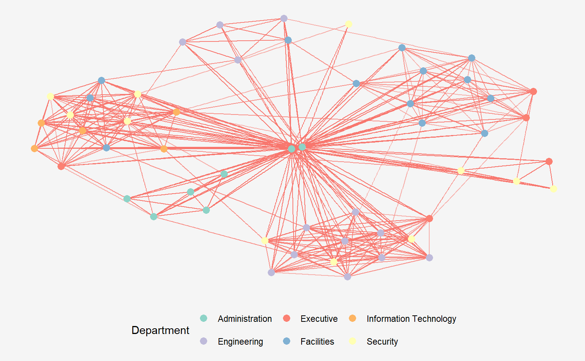

pacman::p_load(igraph, tidygraph, ggraph,
visNetwork, lubridate, clock,
tidyverse, graphlayouts,
knitr)Hands-on Exercise 8: Modelling, Visualising and Analysing Network Data with R

1 Overview
In this hands-on exercise, we will learn how to model, analyse and visualise network data using R, including:
- Creating graph object data frames, manipulate them using appropriate functions of dplyr, lubridate, and tidygraph,
- Building network graph visualisation using appropriate functions of ggraph,
- Computing network geometrics using tidygraph,
- Building advanced graph visualisation by incorporating the network geometrics, and
- Building interactive network visualisation using visNetwork package.
2 Getting Started
- Network data modelling and visualisation packages: igraph, tidygraph, ggraph and visNetwork.
- Data/time wrangling: tidyverse, clock, lubridate
- Edges data: GAStech-email_edges.csv which consists of two weeks of 9063 emails correspondances between 55 employees.
- Nodes data: GAStech_email_nodes.csv which consist of the names, department and title of the 55 employees.
GAStech_nodes <- read_csv("data/GAStech_email_node.csv")
GAStech_edges <- read_csv("data/GAStech_email_edge-v2.csv")3 Data Wrangling
Next, we will examine the structure of the data frame using glimpse() of dplyr.
glimpse(GAStech_edges)Rows: 9,063
Columns: 8
$ source <dbl> 43, 43, 44, 44, 44, 44, 44, 44, 44, 44, 44, 44, 26, 26, 26…
$ target <dbl> 41, 40, 51, 52, 53, 45, 44, 46, 48, 49, 47, 54, 27, 28, 29…
$ SentDate <chr> "6/1/2014", "6/1/2014", "6/1/2014", "6/1/2014", "6/1/2014"…
$ SentTime <time> 08:39:00, 08:39:00, 08:58:00, 08:58:00, 08:58:00, 08:58:0…
$ Subject <chr> "GT-SeismicProcessorPro Bug Report", "GT-SeismicProcessorP…
$ MainSubject <chr> "Work related", "Work related", "Work related", "Work rela…
$ sourceLabel <chr> "Sven.Flecha", "Sven.Flecha", "Kanon.Herrero", "Kanon.Herr…
$ targetLabel <chr> "Isak.Baza", "Lucas.Alcazar", "Felix.Resumir", "Hideki.Coc…Action Points:
SentDate is treated as “Character” data type instead of date data type. We need to convert to the correct data type of SentDate field to “Date”” data type before proceeding.
3.1 Correcting Data Type
Key points: - dmy() of the lubridate package transforms the SentDate to Date data type. - wday(), also from lubridate, returns the day of the week as a decimal number or an ordered factor with label = TRUE. The argument abbr = FALSE keep the days spells in full, i.e. Monday instead of Mon. - mutate() creates a new column in the data.frame i.e. Weekday and the output of wday() will save in this newly created field. - Values in the Weekday field are in ordinal scale.
GAStech_edges <- GAStech_edges %>%
mutate(SendDate = dmy(SentDate)) %>%
mutate(Weekday = wday(SentDate,
label = TRUE,
abbr = FALSE))Checking the results of the correction:
glimpse(GAStech_edges)Rows: 9,063
Columns: 10
$ source <dbl> 43, 43, 44, 44, 44, 44, 44, 44, 44, 44, 44, 44, 26, 26, 26…
$ target <dbl> 41, 40, 51, 52, 53, 45, 44, 46, 48, 49, 47, 54, 27, 28, 29…
$ SentDate <chr> "6/1/2014", "6/1/2014", "6/1/2014", "6/1/2014", "6/1/2014"…
$ SentTime <time> 08:39:00, 08:39:00, 08:58:00, 08:58:00, 08:58:00, 08:58:0…
$ Subject <chr> "GT-SeismicProcessorPro Bug Report", "GT-SeismicProcessorP…
$ MainSubject <chr> "Work related", "Work related", "Work related", "Work rela…
$ sourceLabel <chr> "Sven.Flecha", "Sven.Flecha", "Kanon.Herrero", "Kanon.Herr…
$ targetLabel <chr> "Isak.Baza", "Lucas.Alcazar", "Felix.Resumir", "Hideki.Coc…
$ SendDate <date> 2014-01-06, 2014-01-06, 2014-01-06, 2014-01-06, 2014-01-0…
$ Weekday <ord> Friday, Friday, Friday, Friday, Friday, Friday, Friday, Fr…SendDate is in time format!
3.2 Wrangling Attributes
A close examination of GAStech_edges data.frame reveals that it consists of individual e-mail flow records. This is not very useful for visualisation. In view of this, we will aggregate the individual by date, senders, receivers, main subject and day of the week.
GAStech_edges_aggregated <- GAStech_edges %>%
filter(MainSubject == "Work related") %>%
group_by(source, target, Weekday) %>%
summarise(Weight = n()) %>%
filter(source!=target) %>%
filter(Weight > 1) %>%
ungroup()4 Creating network objects using tidygraph
4.1 tbl_graph object
Two functions of tidygraph package can be used to create network objects, they are:
tbl_graph()creates a tbl_graph network object from nodes and edges data.as_tbl_graph()converts network data and objects to a tbl_graph network. Below are network data and objects supported byas_tbl_graph()- a node data.frame and an edge data.frame,
- data.frame, list, matrix from base,
- igraph from igraph,
- network from network,
- dendrogram and hclust from stats,
- Node from data.tree,
- phylo and evonet from ape, and
- graphNEL, graphAM, graphBAM from graph (in Bioconductor).
4.2 The dplyr verbs in tidygraph
- activate() verb from tidygraph serves as a switch between tibbles for nodes and edges. All dplyr verbs applied to tbl_graph object are applied to the active tibble.
iris_tree <- iris_tree %>%
activate(nodes) %>%
mutate(Species = ifelse(leaf, as.character(iris$Species)[label], NA)) %>%
activate(edges) %>%
mutate(to_setosa = .N()$Species[to] =='setosa')In the above the .N() function is used to gain access to the node data while manipulating the edge data. Similarly .E() will give you the edge data and .G() will give you the tbl_graph object itself.
%>% mutate(Species = ifelse(leaf, as.character(iris$Species)[label], NA)): This line adds a new column calledSpeciesto thenodesdata frame. Theifelse()function assigns a value to this column based on whether the node is a leaf or not. If it is a leaf, the value is taken from thelabelcolumn of theiris$Speciesdata frame (which contains the actual species names), and if it is not a leaf, the value is set toNA.%>% mutate(to_setosa = .N()$Species[to] == 'setosa'): This line adds a new column calledto_setosato theedgesdata frame. Theifelse()function assigns a value to this column based on whether the target node of each edge is a member of thesetosaspecies or not. Thetovariable refers to the index of the target node in thenodesdata frame, and the.N()function allows access to theSpeciescolumn of thenodesdata frame.
4.3 Using tbl_graph() to build tidygraph data model
In this section, I will use tbl_graph() of tidygraph package to build an tidygraph’s network graph data.frame.
Format of nodes and edges data
GAStech_nodes has ID of nodes as first column. GAStech_edges_aggregated contains source and target as column 1 and 2.
GAStech_graph<- tbl_graph(nodes=GAStech_nodes,
edges = GAStech_edges_aggregated,
directed = TRUE)4.4 Reviewing the output tidygraph’s graph object
# A tbl_graph: 54 nodes and 1372 edges
#
# A directed multigraph with 1 component
#
# Node Data: 54 × 4 (active)
id label Department Title
<dbl> <chr> <chr> <chr>
1 1 Mat.Bramar Administration Assistant to CEO
2 2 Anda.Ribera Administration Assistant to CFO
3 3 Rachel.Pantanal Administration Assistant to CIO
4 4 Linda.Lagos Administration Assistant to COO
5 5 Ruscella.Mies.Haber Administration Assistant to Engineering Group Mana…
6 6 Carla.Forluniau Administration Assistant to IT Group Manager
7 7 Cornelia.Lais Administration Assistant to Security Group Manager
8 44 Kanon.Herrero Security Badging Office
9 45 Varja.Lagos Security Badging Office
10 46 Stenig.Fusil Security Building Control
# ℹ 44 more rows
#
# Edge Data: 1,372 × 4
from to Weekday Weight
<int> <int> <ord> <int>
1 1 2 Sunday 5
2 1 2 Monday 2
3 1 2 Tuesday 3
# ℹ 1,369 more rows- The output above reveals that GAStech_graph is a tbl_graph object with 54 nodes and 4541 edges.
- The command also prints the first six rows of “Node Data” and the first three of “Edge Data”.
- It states that the Node Data is active (Node data is on top of Edge data). The notion of an active tibble within a
tbl_graphobject makes it possible to manipulate the data in one tibble at a time.
4.6 Changing the active object
The nodes tibble data frame is activated by default, but you can change which tibble data frame is active with the activate() function. Thus, if we wanted to rearrange the rows in the edges tibble to list those with the highest “weight” first, we could use activate() and then arrange().
GAStech_graph %>%
activate(edges) %>%
arrange(desc(Weight))# A tbl_graph: 54 nodes and 1372 edges
#
# A directed multigraph with 1 component
#
# Edge Data: 1,372 × 4 (active)
from to Weekday Weight
<int> <int> <ord> <int>
1 40 41 Saturday 13
2 41 43 Monday 11
3 35 31 Tuesday 10
4 40 41 Monday 10
5 40 43 Monday 10
6 36 32 Sunday 9
7 40 43 Saturday 9
8 41 40 Monday 9
9 19 15 Wednesday 8
10 35 38 Tuesday 8
# ℹ 1,362 more rows
#
# Node Data: 54 × 4
id label Department Title
<dbl> <chr> <chr> <chr>
1 1 Mat.Bramar Administration Assistant to CEO
2 2 Anda.Ribera Administration Assistant to CFO
3 3 Rachel.Pantanal Administration Assistant to CIO
# ℹ 51 more rows5 Plotting Static Network Graphs with ggraph package
ggraph is an extension of ggplot2, making it easier to carry over basic ggplot skills to the design of network graphs.
As in all network graph, there are three main aspects to a ggraph’s network graph, they are:
For a comprehensive discussion of each of this aspect of graph, please refer to their respective vignettes provided.
5.1 Plotting a basic network graph
The code chunk below uses
- ggraph(),
- geom-edge_link() and
- geom_node_point() to plot a network graph by using GAStech_graph.
ggraph(GAStech_graph) + #<<< GAStech_graph is a tbl_graph object
geom_edge_link0(edge_colour = "#c7c8cc", #<< global aesthetics
#aes(edge_width = "Weight") #<< attribute-level aes, but this was ugly lol
) +
geom_node_point(shape = 21,
color = "black",
stroke = 1,
aes(fill = Department)) +
geom_node_text(color = "grey25",
fontface= "bold",
size = 3,
repel = TRUE,
aes(label = label)) +
theme(legend.position = "bottom",
legend.background = element_rect(fill="#f5f5f5"),
plot.background = element_rect(fill="#f5f5f5"),
panel.background = element_rect(fill="#f5f5f5"))The basic plotting function is
ggraph(), which takes the data to be used for the graph and the type of layout desired. Both of the arguments forggraph()are built around igraph. Therefore,ggraph()can accept either an igraph object or a tbl_graph object.igraphuses an adjacency matrix or an edge list and is more focused on traditional graph theory algorithms and operations.In an edge list, each row represents an edge, with the first two columns containing the indices of the nodes that the edge connects.
tidygraphuses atbl_graphobject, which is a tidy data frame representation of a graph. Thenodesandedgesdata frames contain the metadata about the nodes and edges, respectively, and can be manipulated using thedplyrsyntax :::
5.2 Changing the default network graph theme
In this section, use theme_graph() to remove the x and y axes. Before getting started, it is advisable to read it’s reference guide at least once.
g <- ggraph(GAStech_graph) + #<<< GAStech_graph is a tbl_graph object
geom_edge_link(edge_colour = "#c7c8cc") +
geom_node_point(aes())
g +
theme_graph()+
theme(legend.position = "bottom",
legend.background = element_rect(fill="#f5f5f5"),
plot.background = element_rect(fill="#f5f5f5", color ="#f5f5f5"),
panel.background = element_rect(fill="#f5f5f5", color ="#f5f5f5"))- ggraph introduces a special ggplot theme that provides better defaults for network graphs than the normal ggplot defaults.
theme_graph(), besides removing axes, grids, and border, changes the font to Arial Narrow (this can be overridden). - The ggraph theme can be set for a series of plots with the
set_graph_style()command run before the graphs are plotted or by usingtheme_graph()in the individual plots.
class(g)[1] "ggraph" "gg" "ggplot"g <- ggraph(GAStech_graph) + #<<< GAStech_graph is a tbl_graph object
geom_edge_link(aes(colour ='grey50'),show.legend = FALSE) + #<< refer to ggraph documentation
geom_node_point(aes(colour ='grey40'))
g + theme_graph(
#background = 'grey10',
text_colour = 'orange') +
theme(legend.position = "none",
legend.background = element_rect(fill="#f5f5f5", color = "#f5f5f5"),
plot.background = element_rect(fill="#f5f5f5", color ="#f5f5f5"),
panel.background = element_rect(fill="#f5f5f5", color ="#f5f5f5")) 5.3 Working with ggraph’s layouts
ggraph support many layout for standard used, they are: star, circle, nicely (default), dh, gem, graphopt, grid, mds, spahere, randomly, fr, kk, drl and lgl. Figures below and on the right show layouts supported by ggraph().
5.4 Fruchterman and Reingold layout
The code chunks below will be used to plot the network graph using Fruchterman and Reingold layout.
To change the layout of ggraphs, refer to ggraph_layout
g <- ggraph(GAStech_graph, layout='fr') +
geom_edge_link(edge_colour = "#c7c8cc") +
geom_node_point(aes())
g +
theme_graph() +
theme(legend.position = "none",
legend.background = element_rect(fill="#f5f5f5", color = "#f5f5f5"),
plot.background = element_rect(fill="#f5f5f5", color ="#f5f5f5"),
panel.background = element_rect(fill="#f5f5f5", color ="#f5f5f5"))g <- ggraph(GAStech_graph, layout='star') +
geom_edge_link(edge_colour = "#c7c8cc") +
geom_node_point(aes())
g +
theme_graph() +
theme(legend.position = "none",
legend.background = element_rect(fill="#f5f5f5", color = "#f5f5f5"),
plot.background = element_rect(fill="#f5f5f5", color ="#f5f5f5"),
panel.background = element_rect(fill="#f5f5f5", color ="#f5f5f5"))g <- ggraph(GAStech_graph, layout='randomly') +
geom_edge_link(edge_colour = "#c7c8cc") +
geom_node_point(aes())
g +
theme_graph() +
theme(legend.position = "none",
legend.background = element_rect(fill="#f5f5f5", color = "#f5f5f5"),
plot.background = element_rect(fill="#f5f5f5", color ="#f5f5f5"),
panel.background = element_rect(fill="#f5f5f5", color ="#f5f5f5"))
g <- ggraph(GAStech_graph, layout='grid') +
geom_edge_link(edge_colour = "#c7c8cc") +
geom_node_point(aes())
g +
theme_graph() +
theme(legend.position = "none",
legend.background = element_rect(fill="#f5f5f5", color = "#f5f5f5"),
plot.background = element_rect(fill="#f5f5f5", color ="#f5f5f5"),
panel.background = element_rect(fill="#f5f5f5", color ="#f5f5f5"))- layout argument is used to define the layout to be used.
5.5 Modifying network nodes
In this section, I will colour each node by referring to their respective departments.
g <- ggraph(GAStech_graph,
layout='nicely') +
geom_edge_link(edge_colour = "#c7c8cc") +
geom_node_point(aes(colour=Department,
size =3))
g +
theme_graph() +
theme(legend.position = "bottom",
legend.background = element_rect(fill="#f5f5f5", color = "#f5f5f5"),
plot.background = element_rect(fill="#f5f5f5", color ="#f5f5f5"),
panel.background = element_rect(fill="#f5f5f5", color ="#f5f5f5")) - geom_node_point is equivalent in functionality to geo_point of ggplot2. It allows for simple plotting of nodes in different shapes, colours and sizes. In the codes chnuks above colour and size are used.
5.7 Modifying edges
In the code chunk below, the thickness of the edges will be mapped with the Weight variable. geom_edge_link search individually
g <- ggraph(GAStech_graph,
layout='nicely') +
geom_edge_link(aes(width=Weight),
alpha= 0.1) + #<< thickness by weight and change alpha
scale_edge_width(range = c(0.1, 5)) + #<< control max size of edge , else my plot is ugly
geom_node_point(aes(colour=Department),
size =3)
g +
theme_graph() +
theme(legend.position = "right",
legend.background = element_rect(fill="#f5f5f5", color = "#f5f5f5"),
plot.background = element_rect(fill="#f5f5f5", color ="#f5f5f5"),
panel.background = element_rect(fill="#f5f5f5", color ="#f5f5f5")) - geom_edge_link draws edges in the simplest way - as straight lines between the start and end nodes. But, it can do more that that. In the example above, argument width is used to map the width of the line in proportional to the Weight attribute and argument alpha is used to introduce opacity on the line.
The code chuck below assign colour to the nodes manually without hard-coding. I have also change the background and text colour.
activate the nodes df and extract the
uniquedepartment using thepull()functionuse
length()function to find the nunique departmentsbrewer.pal()function generates a set of colors based on the number of unique departmentssetNames()function is used to map the colors to the departmentsscale_color_manual()function is used to apply the color mapping to the Department nodes.
library(RColorBrewer)
# Get unique departments from data
departments <- unique(GAStech_graph %>% activate(nodes) %>% pull(Department))
# Generate color palette based on number of unique departments
num_departments <- length(departments)
color_palette <- brewer.pal(num_departments, "Set3")
# Create color mapping for Department nodes
color_mapping <- setNames(color_palette, departments)
# Create plot with color mapping
j <- ggraph(GAStech_graph, layout='fr') +
geom_edge_link(aes(alpha=0.1, colour='white'),show.legend = FALSE) +
geom_node_point(aes(colour=Department), size = 3) +
scale_color_manual(values = color_mapping) +
theme(legend.position = "bottom",
legend.background = element_rect(fill="#f5f5f5", color = "#f5f5f5"),
plot.background = element_rect(fill="#f5f5f5", color ="#f5f5f5"),
panel.background = element_rect(fill="#f5f5f5", color ="#f5f5f5"))
j
ggraph(GAStech_graph,
layout='star') +
geom_edge_link(aes()) +
geom_node_point(aes(colour=Department), size =4) +
scale_color_manual(values = c("Administration" = "#A98067",
"Engineering" = "#9ec9ef",
"Executive" = "#D3D477",
"Facilities" = "#e8d9ec",
"Information Technology" = "#ffd965",
"Security" = "#fba18c")) +
theme_graph() +
theme(legend.position = "bottom",
legend.background = element_rect(fill="#f5f5f5", color = "#f5f5f5"),
plot.background = element_rect(fill="#f5f5f5", color ="#f5f5f5"),
panel.background = element_rect(fill="#f5f5f5", color ="#f5f5f5")) g <- ggraph(GAStech_graph) +
geom_edge_link(aes(alpha=0.2, colour=Weekday)) +
geom_node_point()
g +
theme_graph() +
theme(legend.position = "bottom",
legend.background = element_rect(fill="#f5f5f5", color = "#f5f5f5"),
plot.background = element_rect(fill="#f5f5f5", color ="#f5f5f5"),
panel.background = element_rect(fill="#f5f5f5", color ="#f5f5f5")) 6 Creating facet graphs
There are three functions in ggraph to implement faceting, they are:
facet_edges() whereby nodes are always drawn in a panel even if the node data contains an attribute named the same as the one used for the edge facetting,
facet_nodes() whereby edges are only draw in a panel if both terminal nodes are present here, and
facet_graph() faceting on two variables simultaneously.
6.1 Working with facet_edges()
set_graph_style() #<< using this command provide plot settings for next few plots
g <- ggraph(GAStech_graph,
layout = "nicely") +
geom_edge_link(aes(width=Weight),
alpha=0.2) +
scale_edge_width(range = c(0.1, 5)) +
geom_node_point(aes(colour = Department),
size = 2)
g +
facet_edges(~Weekday) +
theme(legend.position = "right",
legend.background = element_rect(fill="#f5f5f5", color = "#f5f5f5"),
plot.background = element_rect(fill="#f5f5f5", color ="#f5f5f5"),
panel.background = element_rect(fill="#f5f5f5", color ="#f5f5f5")) 6.2 Working with facet_edges(): change legend position
The code chunk below uses theme() to change the position of the legend.
set_graph_style()
ggraph(GAStech_graph,
layout='nicely') +
geom_edge_link(aes(width=Weight),
alpha=0.2) +
scale_edge_width(range = c(0.1,5)) +
geom_node_point(aes(colour=Department),
size =2) +
theme(legend.position = "bottom",
legend.background = element_rect(fill="#f5f5f5", color = "#f5f5f5"),
plot.background = element_rect(fill="#f5f5f5", color ="#f5f5f5"),
panel.background = element_rect(fill="#f5f5f5", color ="#f5f5f5"))+
facet_edges(~Weekday)6.3 A framed facet graph
The code chunk below adds frame to each graph.
set_graph_style()
g<- ggraph(GAStech_graph,
layout='nicely') +
geom_edge_link(aes(width=Weight),
alpha = 0.2) +
scale_edge_width(range = c(0.1,5)) +
geom_node_point(aes(colour=Department),
size = 2)
g + facet_edges(~Weekday) +
th_foreground(foreground = 'grey80',
fg_text_colour = 'white',
border = TRUE) +
theme(legend.position = "bottom",
legend.background = element_rect(fill="#f5f5f5", color = "#f5f5f5"),
plot.background = element_rect(fill="#f5f5f5", color ="#f5f5f5"),
panel.background = element_rect(fill="#f5f5f5", color ="#f5f5f5"))6.4 Working with facet_nodes()
In the code chunkc below, facet_nodes() is used. Before getting started, it is advisable for you to read it’s reference guide at least once.
set_graph_style()
g<- ggraph(GAStech_graph,
layout='nicely') +
geom_edge_link(aes(width=Weight),
alpha = 0.2) +
scale_edge_width(range = c(0.1,5)) +
geom_node_point(aes(colour=Department),
size = 2)
g + facet_nodes(~Department) +
th_foreground(foreground = 'grey80',
fg_text_colour = 'white',
border = TRUE) +
theme(legend.position = "bottom",
legend.background = element_rect(fill="#f5f5f5", color = "#f5f5f5"),
plot.background = element_rect(fill="#f5f5f5", color ="#f5f5f5"),
panel.background = element_rect(fill="#f5f5f5", color ="#f5f5f5"))7 Network Metrics Analysis
7.1 Computing centrality indices
Centrality measures are a collection of statistical indices use to describe the relative important of the actors are to a network. There are four well-known centrality measures, namely: degree, betweenness, closeness and eigenvector. It is beyond the scope of this hands-on exercise to cover the principles and mathematics of these measure here. Students are encouraged to refer to Chapter 7: Actor Prominence of A User’s Guide to Network Analysis in R to gain better understanding of theses network measures.
Tidygraph documentation: so far we used tbl_graph() to create a tbl_graph network object / dataframe called GAStech_graph. Then we practise activate() to swtich between nodes and edges tibbles. This network obj is passed into ggraph() to plot the charts.
Now we are using tidy graph to perform centrality calculations.
ggraph documentation: node, edge, layouts
set.seed (1234)
g <- GAStech_graph %>%
mutate(betweenness_centrality = centrality_betweenness()) %>% #<< tidygraph doc
ggraph(layout='fr') +
geom_edge_link(aes(width=Weight,
alpha= 0.2)) +
scale_edge_width(range = c(0.1, 5)) +
geom_node_point(aes(colour=Department, size = betweenness_centrality))
g +
theme_graph() +
theme(legend.position = "right",
legend.background = element_rect(fill="#f5f5f5", color = "#f5f5f5"),
plot.background = element_rect(fill="#f5f5f5", color ="#f5f5f5"),
panel.background = element_rect(fill="#f5f5f5", color ="#f5f5f5"))- mutate() of dplyr is used to perform the computation and create a new col called betweenness_centrality. Use tidyverse commands on tidygraph object.
- the algorithm used, on the other hand, is the centrality_betweenness() of tidygraph.
To see the centrality values:
GAStech_graph %>%
mutate(betweenness_centrality = centrality_betweenness()) # A tbl_graph: 54 nodes and 1372 edges
#
# A directed multigraph with 1 component
#
# Node Data: 54 × 5 (active)
id label Department Title betweenness_centrality
<dbl> <chr> <chr> <chr> <dbl>
1 1 Mat.Bramar Administration Assistant to… 231.
2 2 Anda.Ribera Administration Assistant to… 240.
3 3 Rachel.Pantanal Administration Assistant to… 65.4
4 4 Linda.Lagos Administration Assistant to… 0
5 5 Ruscella.Mies.Haber Administration Assistant to… 596.
6 6 Carla.Forluniau Administration Assistant to… 64.3
7 7 Cornelia.Lais Administration Assistant to… 0
8 44 Kanon.Herrero Security Badging Offi… 122.
9 45 Varja.Lagos Security Badging Offi… 58.2
10 46 Stenig.Fusil Security Building Con… 5.90
# ℹ 44 more rows
#
# Edge Data: 1,372 × 4
from to Weekday Weight
<int> <int> <ord> <int>
1 1 2 Sunday 5
2 1 2 Monday 2
3 1 2 Tuesday 3
# ℹ 1,369 more rows7.2 Visualising network metrics (without computing col above)
It is important to note that from ggraph v2.0 onward tidygraph algorithms such as centrality measures can be accessed directly in ggraph calls. This means that it is no longer necessary to precompute and store derived node and edge centrality measures on the graph in order to use them in a plot.
set.seed (1234)
g <- GAStech_graph %>%
ggraph(layout = "fr") +
geom_edge_link(aes(width=Weight),
alpha=0.2) +
scale_edge_width(range = c(0.1, 5)) +
geom_node_point(aes(colour = Department,
size = centrality_betweenness())) #<<<< access betweenness values directly using `centrality_betweenness()`
g +
theme_graph() +
theme(legend.position = "right",
legend.background = element_rect(fill="#f5f5f5", color = "#f5f5f5"),
plot.background = element_rect(fill="#f5f5f5", color ="#f5f5f5"),
panel.background = element_rect(fill="#f5f5f5", color ="#f5f5f5"))7.3 Visualising Community
tidygraph package inherits many of the community detection algorithms imbedded into igraph and makes them available to us, including Edge-betweenness (group_edge_betweenness), Leading eigenvector (group_leading_eigen), Fast-greedy (group_fast_greedy), Louvain (group_louvain), Walktrap (group_walktrap), Label propagation (group_label_prop), InfoMAP (group_infomap), Spinglass (group_spinglass), and Optimal (group_optimal). Some community algorithms are designed to take into account direction or weight, while others ignore it. Use this link to find out more about community detection functions provided by tidygraph,
In the code chunk below group_edge_betweenness() is used.
set.seed (1234)
g <- GAStech_graph %>%
mutate(community = as.factor(group_edge_betweenness(weights = Weight, directed = TRUE))) %>%
ggraph(layout = "fr") +
geom_edge_link(aes(width=Weight),
alpha=0.2) +
scale_edge_width(range = c(0.1, 5)) +
geom_node_point(aes(colour = community))
g +
theme_graph() +
theme(legend.position = "right",
legend.background = element_rect(fill="#f5f5f5", color = "#f5f5f5"),
plot.background = element_rect(fill="#f5f5f5", color ="#f5f5f5"),
panel.background = element_rect(fill="#f5f5f5", color ="#f5f5f5"))set.seed (1234)
g <- GAStech_graph %>%
mutate(community = as.factor(group_edge_betweenness(weights = Weight,
directed = TRUE,
n_groups = 7))) %>%
ggraph(layout = "fr") +
geom_edge_link(aes(width=Weight),
alpha=0.2) +
scale_edge_width(range = c(0.1, 5)) +
geom_node_point(aes(colour = community))
g +
theme_graph() +
theme(legend.position = "right",
legend.background = element_rect(fill="#f5f5f5", color = "#f5f5f5"),
plot.background = element_rect(fill="#f5f5f5", color ="#f5f5f5"),
panel.background = element_rect(fill="#f5f5f5", color ="#f5f5f5"))set.seed (1234)
g <- GAStech_graph %>%
mutate(community = as.factor(group_edge_betweenness(weights = Weight,
directed = TRUE,
n_groups = 2))) %>%
ggraph(layout = "fr") +
geom_edge_link(aes(width=Weight),
alpha=0.2) +
scale_edge_width(range = c(0.1, 5)) +
geom_node_point(aes(colour = community))
g +
theme_graph() +
theme(legend.position = "right",
legend.background = element_rect(fill="#f5f5f5", color = "#f5f5f5"),
plot.background = element_rect(fill="#f5f5f5", color ="#f5f5f5"),
panel.background = element_rect(fill="#f5f5f5", color ="#f5f5f5"))
8 Building Interactive Network Graph with visNetwork
visNetwork() is a R package for network visualization, using vis.js javascript library.
visNetwork() function uses a nodes list and edges list to create an interactive graph.
The nodes list must include an “id” column, and the edge list must have “from” and “to” columns. (Instead of ‘source’ and ‘target’?)
The function also plots the labels for the nodes, using the names of the actors from the “label” column in the node list.
The resulting graph is fun to play around with.
You can move the nodes and the graph will use an algorithm to keep the nodes properly spaced.
You can also zoom in and out on the plot and move it around to re-center it.
8.1 Data preparation
Before we can plot the interactive network graph, we need to prepare the data model by using the code chunk below. In this df, there is no weekday column, unlike GAStech_edges_aggregated df.
GAStech_edges_aggregated2 <- GAStech_edges %>%
left_join(GAStech_nodes, by =c('sourceLabel' = 'label')) %>% #edges$sourceLabel == nodes.label and the key of right table does not appear
rename(from = id) %>% #rename 'id' column to 'from'
left_join(GAStech_nodes, by = c("targetLabel" = "label")) %>%
rename(to = id) %>%
filter(MainSubject == 'Work related') %>%
group_by(from,to) %>%
summarise(weight=n()) %>%
filter(from != to) %>%
filter(weight >1) %>%
ungroup()8.2 Plotting the first interactive network graph
The code chunk below will be used to plot an interactive network graph by using the data prepared.
visNetwork(GAStech_nodes,
GAStech_edges_aggregated2,
background = "#f5f5f5")8.3 Working with layout
In the code chunk below, Fruchterman and Reingold layout is used.
set.seed(1234)
visNetwork(GAStech_nodes,
GAStech_edges_aggregated2,
background = "#f5f5f5") %>%
visIgraphLayout(layout = 'layout_with_fr')Visit Igraph to find out more about visIgraphLayout’s argument.
8.4 Working with visual attributes - Nodes
visNetwork() looks for a field called “group” in the nodes object and colour the nodes according to the values of the group field.
The code chunk below rename Department field to group.
GAStech_nodes <- GAStech_nodes %>% rename(group= Department)Running the code chunk above with the rename column will allow visNet to shade the nodes by assigning a unique colour to each category in the group field.
set.seed(1234)
visNetwork(GAStech_nodes,
GAStech_edges_aggregated2,
background = "#f5f5f5") %>%
visIgraphLayout(layout = 'layout_with_fr') %>%
visLegend() # %>% visLayout(randomSeed = 1234)8.5 Working with visual attributes - Edges
In the code run below visEdges() is used to symbolise the edges.
- The argument arrows is used to define where to place the arrow.
- The smooth argument is used to plot the edges using a smooth curve.
set.seed(1234)
visNetwork(GAStech_nodes,
GAStech_edges_aggregated2,
background = "#f5f5f5") %>%
visIgraphLayout(layout = "layout_with_fr") %>%
visEdges(arrows = 'to',
smooth = list(enables = TRUE,
type= 'curvedCW'),
shadow = FALSE,
dash = FALSE) %>%
visLegend() Visit Option to find out more about visEdges’s argument.
arrows : “to”, “from”, “middle”, “middle;to” dashes: TRUE , FALSE title: paste(‘Text’, 1:8) – tooltip smooth: FALSE, TRUE shadow: TRUE, FALSE visNetwork(nodes, edges, height = “500px”, width = “100%”)
8.6 Interactivity
In the code chunk below, visOptions() is used to incorporate interactivity features in the data visualisation.
- The argument highlightNearest highlights nearest when clicking a node. (Does it highlight the ego-network?)
- The argument nodesIdSelection adds an id node selection creating an HTML select element.
visNetwork(GAStech_nodes,
GAStech_edges_aggregated2,
background = "#f5f5f5") %>%
visIgraphLayout(layout = "layout_with_fr") %>%
visOptions(highlightNearest = TRUE,
nodesIdSelection = TRUE) %>%
visLegend() %>%
visLayout(randomSeed = 123)9 Reference
- Kam, T.S. (2023). Modelling, Visualising and Analysing Network Data with R.